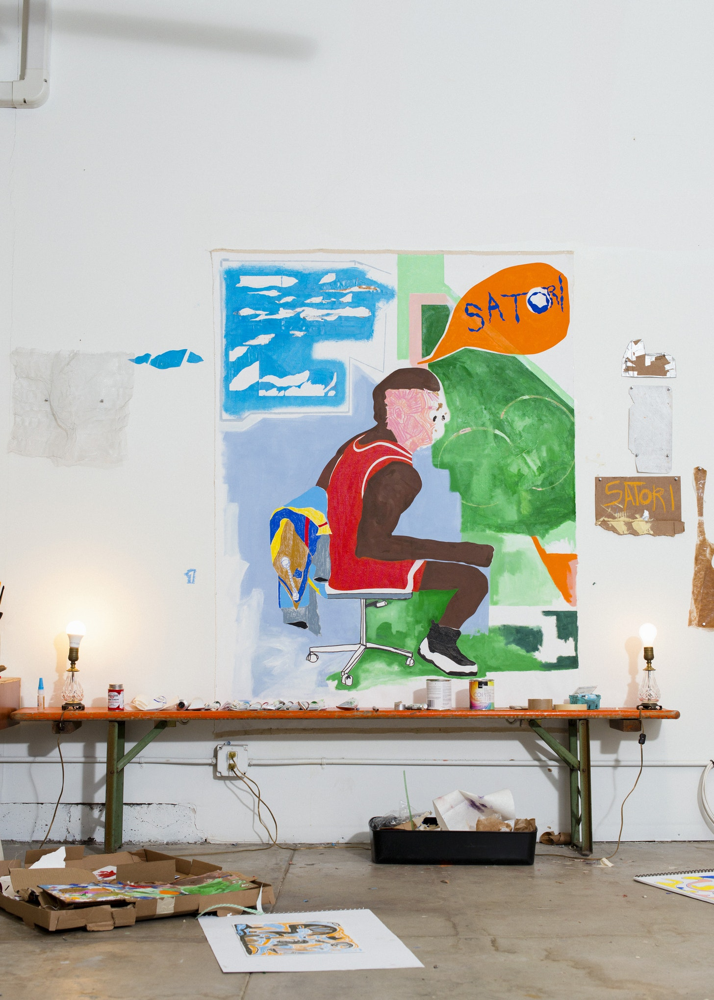
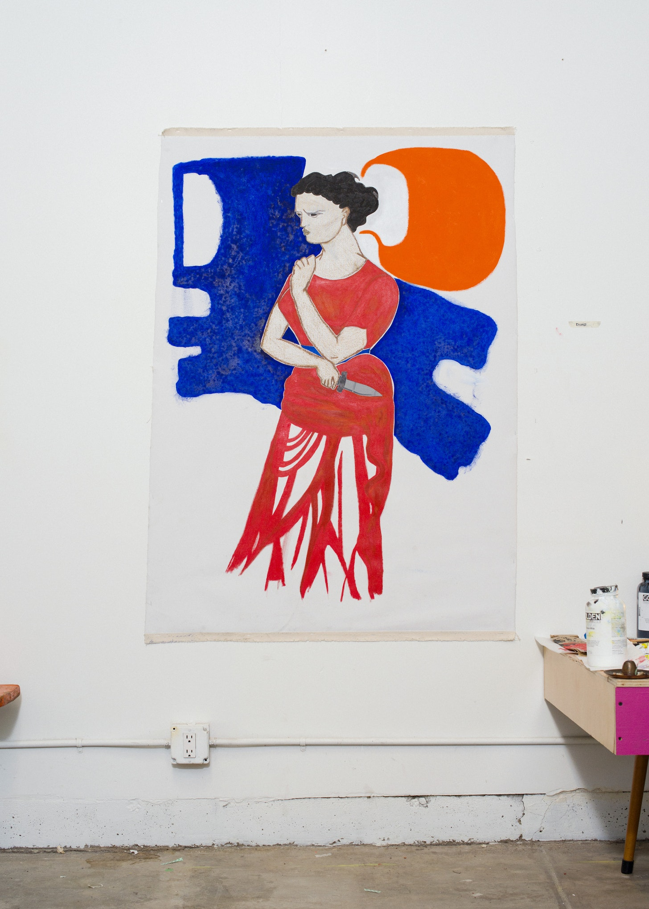

I met Alia Shawkat at a dinner in New York through our friend Nick Thorburn, a great Canadian songwriter and
artist. Years later, in 2017, we found ourselves meeting again in Los Angeles. Alia is smart, funny, and daring in her work as an actor.
She brings the same unique perspective for expression to her art too.
In 2018, she let me view her newly rented studio in Los Angeles. The space was quiet and clean in the way only freshly moved-in studios can be.
One of my original L.A. friends Nathanael Turner took the photos.
"I'm a visual artist because I have to do something with my hands. The minute I have anything that makes a mark on paper I can’t stop drawing.
"I see colors and shapes in life and try to remember them for when I'm in front of some paper again. A canvas. A blank sheet. Seeing an idea of a
painting in my head is like a race. A race to get it down on paper before it leaves my brain.
"I bought this studio to allow myself space. Space to make and be in focus. To process life and all the memories and all the people and all the words and all the colors, to put it down, step back, and see what is happening inside this brain."
 "I'm still learning how to name my pieces and to speak about them. They speak to me about what they mean more than I can dictate. I hope they speak to you."